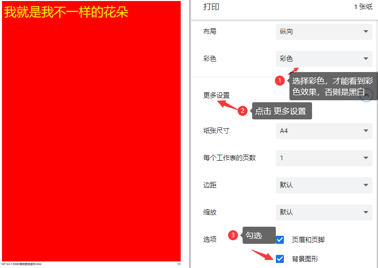

一、什么是响应式布局
- 响应式布局：只需要开发一套代码，就能使页面适应不同的屏幕 （一个网站兼容多种终端）
- 响应式设计原理：通过媒体查询来检测视口宽，针对不同视口宽做相应代码处理，来展现不同的布局和内容
- 流体布局和 rem/vw 布局，只是针对移动端开发的，开发出来的网站在尺寸为（320 ~ 480px）之间的屏幕上显示，才能获得好的体验。并不能适应iPad和PC 端。
- 响应式布局开发出来的网站，在移动、ipad、PC 端都能有好的体验，能兼容不同的屏幕尺寸
二、媒体查询的语法
什么是媒体查询
- 我们知道，一套 CSS 样式是很难适应不同大小的屏幕，所以我们需要针对不同的屏幕尺寸来书写不同的样式，这样我们写出来的页面就能在不同大小的屏幕上都正常显示。
- 媒体查询就是用来解决这个问题的，他能帮助我们检测不同屏幕的尺寸，然后针对不同屏幕尺寸，显示不同的样式。
- 一个完整的媒体查询语句，包含以下四个部分：
- @media 关键字
- 媒体类型
- 逻辑运算符
- 媒体特性
<style> /* @media 媒体类型 逻辑操作符 (媒体特性) { ...css样式....; } @media 是关键字：媒体查询 screen 媒体类型：屏幕设备 and 逻辑运算符：与 (多个条件同时满足) min-width 媒体特性：设备宽>=400px 以下整个媒体查询代码的含义：网页是在屏幕设备上显示，同时屏幕设备的宽>=400px时，背景颜色变为红色。 */ @media screen and (min-width: 400px) { body { background-color: red; } } </style>媒体类型
- 媒体类型(Media types) 就是用来描述设备的一般类别，设备类别主要分为以下 4 种
媒体类型 说明 all （默认值）适用于所有的设备 screen 适用于屏幕设备 print 适用于在打印预览模式下在屏幕上查看的分页材料和文档 speech 适用于语音合成器 如果媒体查询语句，只指定媒体类型，可以简写成如下: @media 媒体类型 ｛ .... css样式..... ｝;
- 媒体类型(Media types) 就是用来描述设备的一般类别，设备类别主要分为以下 4 种
要看到打印模式下效果，按以下步骤操作即可
- 涉及到颜色一定要记得选彩色
- 在浏览器中右击 -> 打印（点击进入） -> 更多设置（点击）>- 背景图形（勾选上）
- 媒体特性
- 媒体特性（Media features）描述了 user agent、输出设备，或是浏览环境的具体特征。
- 媒体特性表达式是完全可选的
- 它负责测试这些特性或特征是否存在、值为多少。
- 每条媒体特性表达式都必须用 括号（） 括起来。
常用的媒体特性媒体特性 说明 width 设备屏幕的宽 min-width 设备屏幕的最小宽(如min-width:400px;表示屏幕宽>=400px) max-width 设备屏幕的最大宽(如max-width:1200px;表示屏幕宽<=1200px) -webkit-device-pixel-ratio 设备像素比(dpr)的值（只有-webkit 内核的才支持） -webkit-max-device-pixel-ratio 设备像素比(dpr)的最大值（只有-webkit 内核的才支持） -webkit-min-device-pixel-ratio 设备像素比(dpr)的最小值（只有-webkit 内核的才支持） orientation 当前屏幕的方向，是横屏还竖屏 portrait: 表示竖屏(orientation : portrait;) landscape:表示横屏 (orientation:landscape;)
写法
- 如果只指定媒体特性，写法如下：
@media （媒体特性） { ...css样式...; }
- 如果同时指定媒体类型和媒体特性，中间需要有逻辑运算符，写法如下：
@media 媒体类型 逻辑运算符 （ 媒体特性） { .... css样式....; }
- 多个媒体特性中间也要有逻辑操运算符
@media 媒体类型 逻辑操运算符 （ 媒体特性） 逻辑操作符 （媒体特性） { .... css样式....; }
- 逻辑运算符
- 逻辑运算符（logical operators） not,and和only可用于联合构造复杂的媒体查询
- 您还可以通过用 ,（逗号） 分隔多个媒体查询，将它们组合为一个规则。
and 运算符
and操作符用于将多个媒体查询规则组合成单条媒体查询- 当每个查询规则都为真时，则该条媒体查询为真
- 媒体类型为
all时，不需要写and
逗号逻辑运算符
- 逗号用于将多个媒体查询合并为一个规则
- 每个逗号前为一个独立的查询规则，逗号后为一个独立的查询规则
- 逗号分隔的每一个独立的查询规则中，只要有一个为true，则整个 media 语句返回true。
- 换句话说,逗号类似于js中的逻辑或or运算符
not运算符
not运算符会反转整个媒体查询的含义- 如果不满足这个条件则返回true，否则返回false
- 如果使用
not运算符，则还必须指定媒体类型,并且写在媒体类型之前not只能用来否定整个媒体查询- 如果出现在以逗号分隔的查询列表中，它将仅否定应用了该查询的特定查询，因此，它不会应用于以逗号分隔的媒体查询列表中的每个媒体查询
@media not screen and (min-width: 1000px), screen and (orientation: landscape) { body { background-color: red; } }
not只否定了not screen and (min-width: 1000px)，并不会否定逗号后面的
注意：not写在媒体类型之前，但是媒体类型和媒体特性中间必须写逻辑运算符
only 运算符
- only 关键字，主要是为了兼容一些老版本的浏览器时，防止出错而加上的。
- 因旧版本的浏览器会将 screen and (max-width: 500px)简单地解释为screen，忽略查询的其余部分，并将其样式应用于所有屏幕
- 加上 only 后，就会正常的解释
三、响应式断点和书写位置
- 当我们需要为不同的屏幕尺寸来设置不同的样式时，我们就需要知道在什么屏幕尺寸下需要做出响应。
- 那这些不同的屏幕尺寸，就称为响应式断点(阈值)
- 响应式断电(阈值)的设定
- 在实际的开发中，响应式断点是由公司根据项目来定的。
- 不过行业也会有一个标准的参考断点（Breakpoint），这里我们以 Bootstrap 框架内部的断点来给大家做讲解
屏幕大小 栅格布局中class名区分 断点（阈值） 超小屏Extra small - <576px 小屏 (Small) -sm 576px ~ 768px （含等于） 中屏 (Medium) -md 768px ~ 992px （含等于） 大屏 (Large) -lg 992px ~ 1200px（含等于） 超大屏 (X-Large) -xl 1200px ~ 1400px（含等于） 超大大屏(XX-Large) -xxl >1400px
- 断点并不是完全固定，按上面的要求值来的。而是根据我们所写的项目，在对屏幕做调整时，如果觉得当前效果不符合我们的需求，需要通过设置新的断点来调整，就可以在此添加相应的断点。
- 以上断点是 Bootstrap 框架内部的断点，我们可以用来作为我们开发的标准来参考。
<style> /* 当屏幕宽小于576px时，以下代码生效 */ body { background-color: red; } /* 当屏幕宽大于等于576px，小于768px时，以下代码生效 */ @media screen and (min-width: 576px) { body { background-color: khaki; } } /* 当屏幕宽大于等于768px，小于992px时，以下代码生效 */ @media screen and (min-width: 768px) { body { background-color: skyblue; } } </style>
- 因为 css 选择器的权重相同时，写在后面的会覆盖写在前面的。所以不用书写具体的屏幕范围，不过要注意代码书写的位置
- 媒体查询的代码书写位置
媒体查询的代码可以写在 style 标签中
可以写在单独的 CSS 文件中,通过 link 标签引入
- 不过都要写在所有 CSS 样式的代码之后。
- 这样就能保证断点生效时，写在媒体查询中的代码能生效，不会被正常的样式所覆盖。
不同断点代码写入不同 css 文件中（不推荐）
- 通过 link 来引用，在 media 中来设置对应断点
- 在满足媒体查询条件时，对应的css文件生效
<link rel="stylesheet" href="a.css" media="screen and (min-width:600px)" /> <link rel="stylesheet" href="b.css" media="screen and (min-width:1000px)" /> /* a.css文件内容 */ body { background-color: skyblue; } /* b.css文件内内容 */ body { background-color: red; }
四、响应式两种适配方案
在实际的响应式开发中，我们会有两种通用的适配方案
- PC 端优先（先考虑 PC 端，最后再考虑移动端）
- 移动端优先（先考虑移动端，最后再考虑 PC 端）
PC端优先
- 从大尺寸开始写，先大后小
- 用
max-width
移动端优先
- 从小尺寸开始，先小后大
- 用
min-width
五、响应式栅格系统
在实际开发中
- 要完美的实现响应式系统或网站的开发，就需要利用响应式栅格系统来帮助我们实现。
- BootStrap 框架实现响应式布局的本质就是他的响应式栅格系统。
- 响应式栅格系统是：栅格布局和响应断点+响应式适配方案 3 者结合实现的一套响应式解决方案
栅格布局
- 所谓的栅格布局，你可以简单理解为，要把一个页面或容器（如 div），分成多少份
- 然后设置其页面或容器中子元素占对应的份数
- 通常一个页面或容器会被分成：12 份，16 份，24 份
- 如果将网页（100%）分成 12 份，那对应不同份数所占的比例如下:
份数 占总份数的百分比% 1 8.33333333% 2 16.6666667% 3 25% 4 33.33333333% 5 41.66666667% 6 50% 7 58.33333333% 8 66.6666667% 9 75% 10 83.33333333% 11 91.66666667% 12 100%
栅格系统实现响应式布局
- 我们说响应式栅格系统是：栅格布局+响应断点+响应式适配方案3者结合实现的一套响应式解决方案
- 接下来我们来学习，如何利用前面学到的栅格布局，响应断点，响应式适配方案实现响应式布局。
- 我们可以按以下 5 个步骤来操作
- 你打算将页面分成多少份 ？
- 确定响应断点有哪些 ？
- 确定响应式适配方案。PC端优先还是移动端优先？
- 在对应的响应断点下，书写对应的栅格布局样式。
- 对着设计稿开发，搭建整个响应式的框架。如果是以移动端优先，则对着移动端设计稿来开发，如果是 PC 端优先，则对着 PC 端设计稿来开发。
但是在开发前，一定要分清版块的归属问题，也就那些版块是在一个父容器中。
五、响应式后台管理系统项目开发
确定栅格系统样式（media.css 样式）
- 将页面分成 12 份，确定栅格布局不同份数所点比例
- 确定项目对应的断点
- 当视口宽大于 1400px 时，以正常效果显示
- 当视口宽 <= 1400px 时，左侧菜单缩放到 75px
- 当视口宽 <= 1300px 时，左侧菜单隐藏
- 当视口宽 <= 1200px 时，上面一行 4 列，变成 1 行 2 列
- 当视口宽 <= 992px 时，第二行的一行 2 列变 1 列，最下面的一行 3 列变成 1 行 2 列和 1 行 1 列
- 当视口宽 <= 768px 时，全部一行一列显示 ，同时上面的导航变成点击下拉菜单形式
- 确定适配方案，以 PC 端优先
注意
- 要用怪异盒模型
- echarts图表实现响应式缩放,在引用图表的
script标签后面加上window.addEventListener("resize",function(){ mychart1.resize(); });